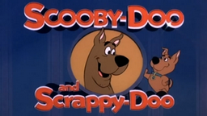

Nostalgia Animada: Desenhos dos Anos 80 e 90
Alguns dos desenhos que mais marcaram a infancia da geração dos anos 80 e 90

Scooby-Doo
Ano de Estreia:1969
Patrulha mistérios com Fred, Daphne, Velma, Salsicha e o cachorro Scooby-Doo, desmascarando vilões fantasiados.

Zé comeia
Ano de Estreia:1961
Urso esperto e folgado que vive aprontando no Parque Jellystone, sempre com a ajuda de seu amigo Catatau.

Turma do pateta
Ano de Estreia:1992
Pateta e seu filho Max vivem trapalhadas e aventuras engraçadas, com humor físico e lições de amizade.

Cavaleiro dos zodiaco
Ano de estreia:1986
Jovens guerreiros vestindo armaduras de constelações lutam para proteger a deusa Atena.

Corrida maluca
Ano de estreia:1968
Onze carros excêntricos competem em corridas malucas, com Dick Vigarista e seu cão Muttley tentando trapacear.

Caverna do dragão
Ano de estreia:1983
Um grupo de jovens que são transportados para um mundo mágico e perigoso enquanto andavam em uma montanha russa.